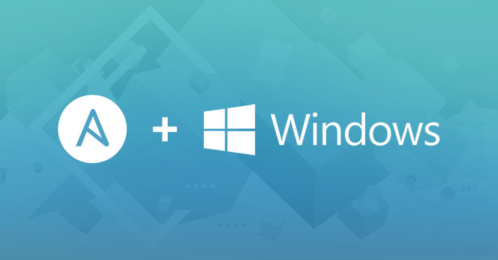

Configure a Ansible Playbook¶
Windows Test Environment¶

Configure templates
Configure templates¶
Setup the VMs that you want the playbook to deploy for you. This will have to be a full configuration of the functionality that you want from the VM. The playbook will not do anything to the VMs themselves, it will just clone the template of the configured VM.
| Machine | Name | User |
|---|---|---|
| Windows Server Main | RPT-Main | Administrator |
| Windows Server Backup | RPT-Back | Administrator |
| Windows Client 1 | Client-1 | Bruger |
| Windows Client 2 | Client-2 | Bruger |
| Windows Client 3 | Client-3 | Bruger |
| Windows Server Main | Windows Server Backup |
|---|---|
| AD-DC | AD-DC |
| DNS | DNS |
| Fully Updated | Fully Updated |
Understand the variables
Understand the variables¶
| Variables | Functions |
|---|---|
| Win_Srv1 | The name of the new server VM |
| Win_10_1 | The name of the new client VM |
| apihost | Proxmox Server IP |
| apiuser | Proxmox Username, password and method (PAM or PVE) |
| apipass | Proxmox Password |
| prox_storage | Storage location on Proxmox Server |
| prox-node | The Proxmox Node to Deploy the VM to |
| disk_format | The format for the VM disk |
| timeout | Wait for the Proxmox server to clone the VM |
| pause | Give the Proxmox server some time to recover from each cloning |
| state | The State The VM Will Be Put Into After Cloning (Can also be present if you don't want more then one, can also be skipped if none is needed) |
Set your variable
Set Your variables¶
- set_fact:
Win_Srv1: "Windows-ADDC-1" # The target 1 VM name
Win_Srv2: "Windows-ADDC-2" # The target 2 VM name
Win_10_1: "Windows-Client-1" # The target 3 VM name
Win_10_2: "Windows-Client-2" # The target 4 VM name
Win_10_3: "Windows-Client-3" # The target 5 VM name
CloneWin_Srv1: "windowsservertemplate" # The 1 VM source
CloneWin_Srv2: "windowsservertemplate2" # The 2 VM source
CloneWin_10_1: "windowstemplate" # The 3 VM source
CloneWin_10_2: "windowstemplate2" # The 4 VM source
CloneWin_10_3: "windowstemplate3" # The 5 VM source
apipass: "*" # The Password Used For Signing In To Proxmox
apihost: "100.124.109.92" # The Proxmox Host IP Address
apiuser: "root@pam" # The Proxmox User With Access
prox_storage: "vms-ssd" # The Target Storage On Proxmox
prox_node: "main" # The Target Node In The Proxmox Cluster
disk_format: "qcow2" # The Format For The Disk .img
timeout: "500" # The Task Can Take a While. Adapt
pause: "10" # How long The Pause Between Tasks Is (Recommend to adjust high if your server is not so strong)
state: "started" # The State The VM Will Be Put Into After Cloning (Can also be present if you don't want more then one, can also be skipped if none is needed)
What your variables a used for
What your variables a used for¶
The first section is for cloning the VM.
The second section is for start the VM after it is done cloning.
- proxmox_kvm:
api_user : "{{ apiuser }}"
api_password: "{{ apipass }}"
api_host : "{{ apihost }}"
clone : "{{ CloneWin_Srv1 }}"
name : "{{ Win_Srv1 }}"
node : "{{ prox_node }}"
storage : "{{ prox_storage }}"
format : "{{ disk_format }}"
timeout : "{{ timeout }}"
- name: Pause for "{{ pause }}" seconds to clone the "{{ Win_Srv1 }}"
ansible.builtin.pause:
seconds: "{{ pause }}"
---------------------------------
- name: start "{{ Win_Srv1 }}"
proxmox_kvm:
api_user: "{{ apiuser }}"
api_password: "{{ apipass }}"
api_host: "{{ apihost }}"
name: "{{ Win_Srv1 }}"
node: "{{ prox_node }}"
state: "{{ state }}"
- name: Pause for "{{ pause }}" seconds to start the "{{ Win_Srv1 }}"
ansible.builtin.pause:
seconds: "{{ pause }}"
Fully made Playbook for Windows Test Environment
Fully made Playbook for Windows Test Environment¶
Please note:
That all of our playbooks has pre-defined "hosts" in this case it is proxmox.
This is because in our ansible hosts file our Proxmox server is named proxmox.
- name: Test Environment
hosts: proxmox
tasks:
- set_fact:
Win_Srv1: "Windows-ADDC-1" # The target 1 VM name
Win_Srv2: "Windows-ADDC-2" # The target 2 VM name
Win_10_1: "Windows-Client-1" # The target 3 VM name
Win_10_2: "Windows-Client-2" # The target 4 VM name
Win_10_3: "Windows-Client-3" # The target 5 VM name
CloneWin_Srv1: "windowsservertemplate" # The 1 VM source
CloneWin_Srv2: "windowsservertemplate2" # The 2 VM source
CloneWin_10_1: "windowstemplate" # The 3 VM source
CloneWin_10_2: "windowstemplate2" # The 4 VM source
CloneWin_10_3: "windowstemplate3" # The 5 VM source
apipass: "*" # The Password Used For Signing In To Proxmox
apihost: "100.124.109.92" # The Proxmox Host IP Address
apiuser: "root@pam" # The Proxmox User With Access
prox_storage: "vms-ssd" # The Target Storage On Proxmox
prox_node: "main" # The Target Node In The Proxmox Cluster
disk_format: "qcow2" # The Format For The Disk .img
timeout: "500" # The Task Can Take a While. Adapt
pause: "10" # How long The Pause Between Tasks Is (Recommend to adjust high if your server is not so strong)
state: "started" # The State The VM Will Be Put Into After Cloning (Can also be present if you don't want more then one, can also be skipped if none is needed)
- proxmox_kvm:
api_user : "{{ apiuser }}"
api_password: "{{ apipass }}"
api_host : "{{ apihost }}"
clone : "{{ CloneWin_Srv1 }}"
name : "{{ Win_Srv1 }}"
node : "{{ prox_node }}"
storage : "{{ prox_storage }}"
format : "{{ disk_format }}"
timeout : "{{ timeout }}"
- name: Pause for "{{ pause }}" seconds to clone the "{{ Win_Srv1 }}"
ansible.builtin.pause:
seconds: "{{ pause }}"
- proxmox_kvm:
api_user : "{{ apiuser }}"
api_password: "{{ apipass }}"
api_host : "{{ apihost }}"
clone : "{{ CloneWin_Srv2 }}"
name : "{{ Win_Srv2 }}"
node : "{{ prox_node }}"
storage : "{{ prox_storage }}"
format : "{{ disk_format }}"
timeout : "{{ timeout }}"
- name: Pause for "{{ pause }}" seconds to clone the "{{ Win_Srv2 }}"
ansible.builtin.pause:
seconds: "{{ pause }}"
- proxmox_kvm:
api_user : "{{ apiuser }}"
api_password: "{{ apipass }}"
api_host : "{{ apihost }}"
clone : "{{ CloneWin_10_1 }}"
name : "{{ Win_10_1 }}"
node : "{{ prox_node }}"
storage : "{{ prox_storage }}"
format : "{{ disk_format }}"
timeout : "{{ timeout }}"
- name: Pause for "{{ pause }}" seconds to clone the "{{ Win-10-1 }}"
ansible.builtin.pause:
seconds: "{{ pause }}"
- proxmox_kvm:
api_user : "{{ apiuser }}"
api_password: "{{ apipass }}"
api_host : "{{ apihost }}"
clone : "{{ CloneWin_10_2 }}"
name : "{{ Win_10_2 }}"
node : "{{ prox_node }}"
storage : "{{ prox_storage }}"
format : "{{ disk_format }}"
timeout : "{{ timeout }}"
- name: Pause for "{{ pause }}" seconds to clone the "{{ Win_10_2 }}"
ansible.builtin.pause:
seconds: "{{ pause }}"
- proxmox_kvm:
api_user : "{{ apiuser }}"
api_password: "{{ apipass }}"
api_host : "{{ apihost }}"
clone : "{{ CloneWin_10_3 }}"
name : "{{ Win_10_3 }}"
node : "{{ prox_node }}"
storage : "{{ prox_storage }}"
format : "{{ disk_format }}"
timeout : "{{ timeout }}"
- name: Pause for "{{ pause }}" seconds to clone the "{{ Win_10_3 }}"
ansible.builtin.pause:
seconds: "{{ pause }}"
- name: start "{{ Win_Srv1 }}"
proxmox_kvm:
api_user: "{{ apiuser }}"
api_password: "{{ apipass }}"
api_host: "{{ apihost }}"
name: "{{ Win_Srv1 }}"
node: "{{ prox_node }}"
state: "{{ state }}"
- name: Pause for "{{ pause }}" seconds to start the "{{ Win_Srv1 }}"
ansible.builtin.pause:
seconds: "{{ pause }}"
- name: start "{{ Win_Srv2 }}"
proxmox_kvm:
api_user: "{{ apiuser }}"
api_password: "{{ apipass }}"
api_host: "{{ apihost }}"
name: "{{ Win_Srv2 }}"
node: "{{ prox_node }}"
state: "{{ state }}"
- name: Pause for "{{ pause }}" seconds to start the "{{ Win_Srv2 }}"
ansible.builtin.pause:
seconds: "{{ pause }}"
- name: start "{{ Win_10_1 }}"
proxmox_kvm:
api_user: "{{ apiuser }}"
api_password: "{{ apipass }}"
api_host: "{{ apihost }}"
name: "{{ Win_10_1 }}"
node: "{{ prox_node }}"
state: "{{ state }}"
- name: Pause for "{{ pause }}" seconds to start the "{{ Win_10_1 }}"
ansible.builtin.pause:
seconds: "{{ pause }}"
- name: start "{{ Win_10_2 }}"
proxmox_kvm:
api_user: "{{ apiuser }}"
api_password: "{{ apipass }}"
api_host: "{{ apihost }}"
name: "{{ Win_10_2 }}"
node: "{{ prox_node }}"
state: "{{ state }}"
- name: Pause for "{{ pause }}" seconds to start the "{{ Win_10_2 }}"
ansible.builtin.pause:
seconds: "{{ pause }}"
- name: start "{{ Win_10_3 }}"
proxmox_kvm:
api_user: "{{ apiuser }}"
api_password: "{{ apipass }}"
api_host: "{{ apihost }}"
name: "{{ Win_10_3 }}"
node: "{{ prox_node }}"
state: "{{ state }}"
LXC Container¶
Set Your Variables
Set Your Variables¶
| Variables | Functions |
|---|---|
| Password | Proxmox Password |
| vmid | The LXC Container id |
| node | The Proxmox Node to Deploy the LXC Container to |
| api_user | Proxmox Username, password and method (PAM or PVE) |
| api_password | Reused Proxmox Password from Password |
| api_host | Proxmox Server IP |
| password | The LXC Container Root Password |
| hostname | The Name of the LXC Container |
| ostemplate | The LXC Template downloaded to the Proxmox server |
| cores | The amount of cores assigned to the LXC Container |
| memory | The amount of RAM assinged to the LXC Container |
| disk | The amount of disk space assigned to the LXC Container |
| storage | The storage location for the LXC Container |
| netif | The network settings for the LXC Container |
| nameserver | The DNS server for the LXC Container |
| unprivileged | Select if the LXC Container should be privileged or unprivileged |
| validate_certs | Select if the LXC Container should interact with HTTP and HTTPS web services |
| onboot | Select if the LXC Container should boot when the Proxmox server has booted |
| description | Sets the description for the LXC Container |
| features | Setup extra arguments |
Fully made playbook for LXC Container
Fully made playbook for LXC Container¶
Please note:
That all of our playbooks has pre-defined "hosts" in this case it is proxmox.
This is because in our ansible hosts file our Proxmox server is named proxmox.
- hosts: proxmox
tasks:
- set_fact:
Password: "*" # Password
- name: Create container for testing
community.general.proxmox:
vmid: "5{{ lookup('password', '/dev/null chars=digits length=2') }}"
node: main
api_user: root@pam
api_password: "{{ Password }}"
api_host: main.pve
password: "{{ Password }}"
hostname: "test-{{ lookup('password', '/dev/null chars=ascii_lowercase,digits length=2') }}"
ostemplate: 'local:vztmpl/ubuntu-22.04-standard_22.04-1_amd64.tar.zst'
cores: 2
memory: 4096
disk: "40"
storage: local-lvm
netif: '{"net0":"name=eth0,gw=192.168.1.1,ip=dhcp,bridge=vmbr0"}'
nameserver: 192.168.1.1
unprivileged: yes
validate_certs: no
onboot: yes
description: container for testing
features:
- nesting=1